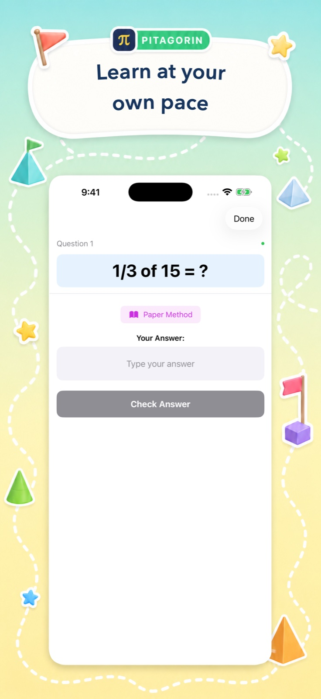

Start at the right level
Age-aware operation choices and three difficulty levels help children begin with a manageable challenge and grow from there.
For children and the grown-ups beside them
Pitagorin helps children ages 5–13 practise independently, choose an appropriate challenge, and reach for a clear visual explanation when they need one.

A thoughtful balance
Pitagorin gives children meaningful choices without leaving them to guess what comes next. The goal is purposeful practice, not endless screen time.
Age-aware operation choices and three difficulty levels help children begin with a manageable challenge and grow from there.
Paper-method tutorials cover carrying, borrowing, fractions, roots, order of operations, and other important foundations.
Personal bests, times-table mastery, Academy history, and challenge scores make improvement visible.
What children can practise
A child can stay with today’s school topic or follow their curiosity into the next one.
Good to know
Pitagorin is free to download with optional Pro features. It does not require an account, and core learning progress stays on the device.
Children are not asked to provide a name, email address, or profile to start practising.
Progress, scores, mastery, and optional handwritten-work photos are stored on the device.
The app supports larger text, dark appearance, reduced motion, and VoiceOver-friendly descriptions for core mathematical visuals.
Read the concise Pitagorin Privacy Policy for advertising, analytics, purchases, and photos.
For every growing mind
Teens and adults can also use Pitagorin to refresh basic maths, strengthen mental calculation, or keep their minds active.